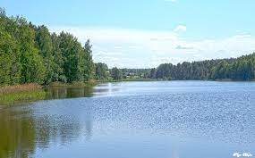
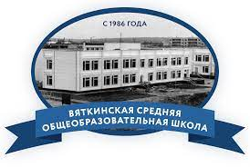

Места, где я бываю
Мой дом
Мой дом - это село Погребищи. В обычное время оно очень тихое и спокйное. Время активностии в моём селе наступает в Пасху и купальный сезон.
Дело в том, что у нас здесь есть озеро, на котором все купаются. Помню, этим летом здесь просто всё было забито машинами. Кстати, оно из-за платины стало водохранилищем, а раньше тут была река Речка Чёрная, которая теперь стала лужей, но зато вподает в Клязьму.
Касательно Пасхи, у нас в селе, собственно и поэтому это село, есть церковь, на территории которой расположено кладбище. Вроде бы в совесткое время сформировалась традиция в пасху ходить на кладбище, наверное из-за того, что церкви просто не работали.
Посмотрите пока на озеро, потому что его я не фоткал(качество ужасное, лучше не нашёл):
Обязательно посмотрите, что я нафоткал и почитайте о моём доме на википедии.
Моя школа
Моя школа - это Вяткинская, в деревне по соседству. Я бы не сказал, что наша школа прям уж обычная школа, потому что там есть изобилее всяких инновационых штук, таких как: куча компьютеров(у нас где-то 5 компьютерных классов), 3д принтеры, сенсорные доски и другие крутые штуки (жалко сиситему образования не изменили :/).
Касательно педагогического состава, я бы сказал, что это одна из лучших школ. Конечно, повезло здесь не всем классам, но конкретно моему оооочень повезло. Почти все учителя умеют шутить, многие очень добрые, хорошо объясняют материал.
У нашей школы есть даже логотип:
Моя компьютерная академия
Это академия "Шаг" во Владимире. Это моя первая секция, доп. образование и другие нудные названия. Учусь я здесь уже почти целый год и всем доволен. Здесь не только узко направленная специальность, а пробуют очень много, чтобы найти своё. Учусь я субботу, не смотря на то, что я учусь, этот день я с нетерпением жду и считаю его очень классным отдыхом от школы. Фактически академия - это все то, чем я хотел заниматься, но не дошли руки
Окружение здесь очень ламповое. С преподавателем легко общаться, развиваются даже дружественные отношения. Одногруппники дружелюбны, и с ними много о чем поговорить.
А вот и логотип:
Собственно благодаря ей, вы сейчас видите этот сайт.